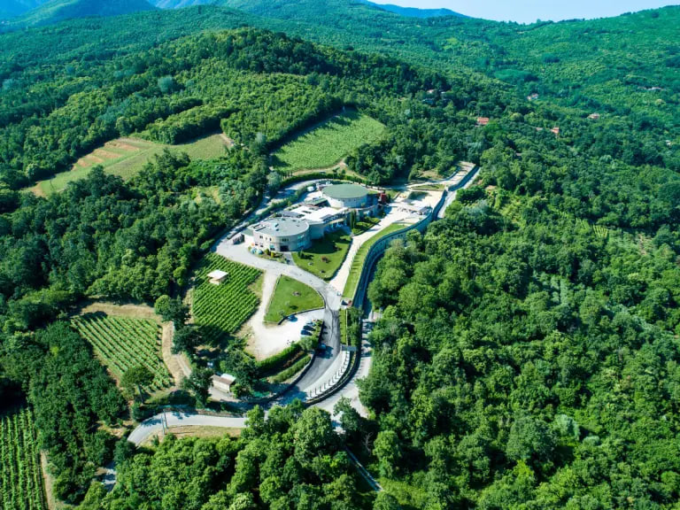
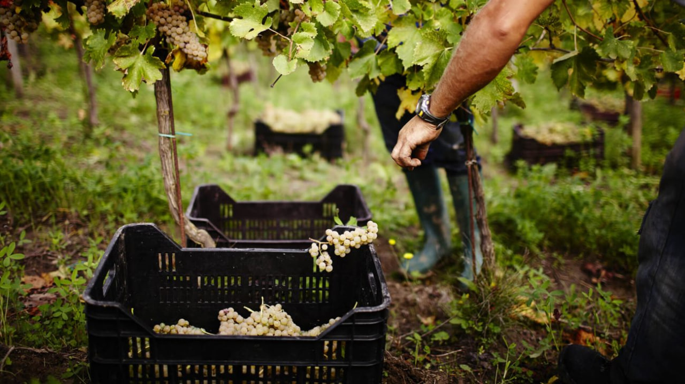
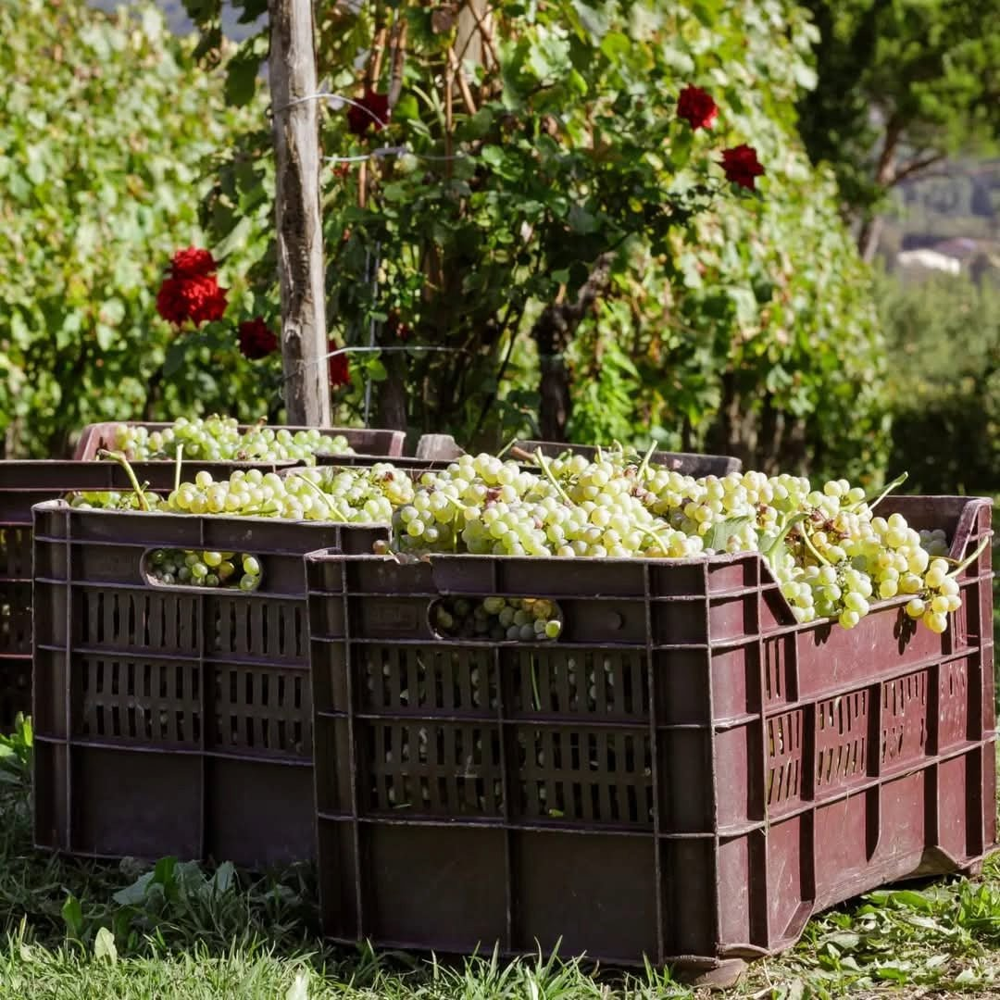
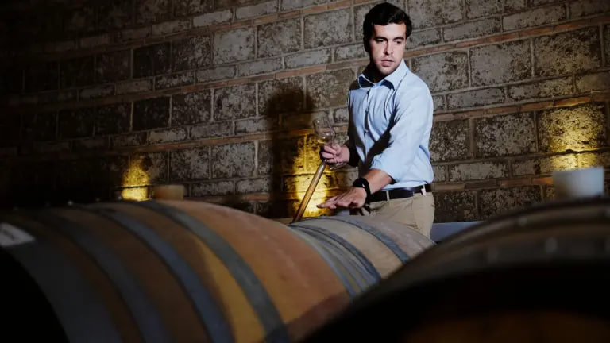

Новости / Villa Raiano
Villa Raiano: от оливкового масла к одному из лучших фиано Италии

Рассказываем о семье Бассо и винодельне Villa Raiano, совершившей небольшую революцию в Ирпинии, сменив курс с красных вин на белые. Судя по нашим последним дегустациям, у них это получилось.
На холмах Сан-Микеле-ди-Серино, в провинции Авеллино, расположена винодельня семьи Бассо. Название связано с корнями: Villa Raiano — историческая местность коммуны Серино, где находилась старая оливковая плантация семьи.

В середине 1990-х с основанием винодельни в Ирпинии начался винодельческий бум. Первые годы для семьи Бассо были скорее хобби: они делали и разливали вино на семейной маслобойне. С 1999 по 2008 год они стали сотрудничать с энологом Луиджи Мойо, который учился вместе с Сабино Бассо в аграрном институте Авеллино.
«В 2008 году мы купили новое оборудование, начали сотрудничество с Фортунато Себастьяно и построили винодельню на вершине холма в Сан-Микеле-ди-Серино», — рассказывает сын Сабино Бассо, Федерико.
Открытие в 2009 году совпало с новым курсом: появились четыре белых вина с отдельных виноградников — три Fiano di Avellino и один Greco di Tufo. Через десять лет к работе подключилось новое поколение: «В компанию пришли я, мой брат Фабрицио и наша кузина Брунелла, дочь Симоне».


В 2024 году открылась новая подземная винодельня, полностью интегрированная в ландшафт. Сегодня Villa Raiano владеет 30 гектарами виноградников: хозяйство работает по биологическим принципам и сертифицировано с 2011 года.
«Мы уверены, что наш регион — земля великих белых вин», — говорит Федерико. «Сила наших DOC — в огромных различиях, которые один и тот же сорт может проявлять в разных условиях».
Континентальный климат позволяет ягодам созревать медленно, что делает вина особенными — как красные, так и белые. На последних дегустациях Gambero Rosso Fiano di Avellino 2024 года особенно впечатлил итальянских экспертов, получив премию Miglior Qualità Prezzo Regionale гида BereBene 2026.
Чем не повод самому проверить мнение Gambero Rosso?